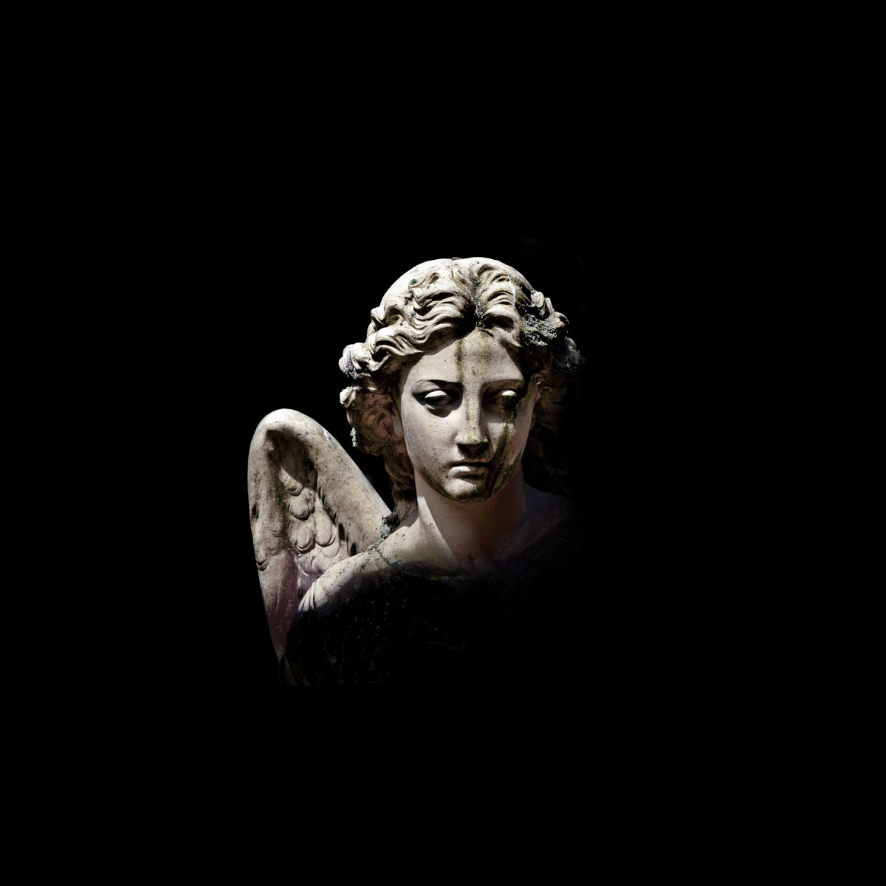

APART is the debut EP by Aviad Zinemanas, exploring different feelings that arise when missing someone you love. Blending synths and orchestral strings, the EP moves through five cinematic and deeply emotional scenes.
The EP was released by the label SIFON and was printed in a limited edition 10-inch vinyl by Nuweiba Records.

Limited Edition 10-inch Vinyl by Nuweiba Records
Listen to APART: